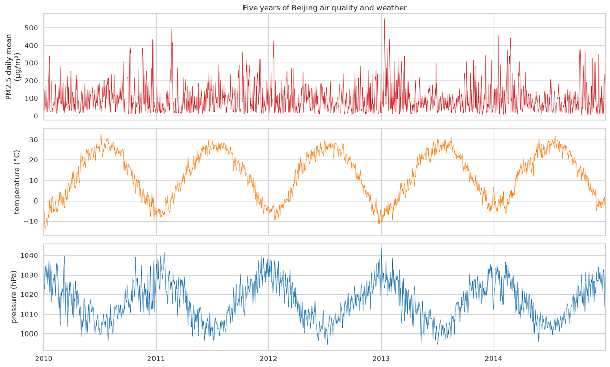

Practice tasks covered
- Practice 1 – import, load and view the dataset
- Practice 2 – summary and statistics (missing data, skew, seasonality)
- 2,067 PM2.5 readings are missing, so the notebook measures where the gaps fall before deciding how to handle them.
- PM2.5 is strongly right-skewed (log-normal), so models work on ln PM2.5.
- Bayes' rule and over-fitting are shown with small demos, then on this data.
